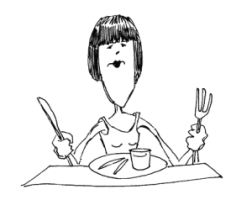
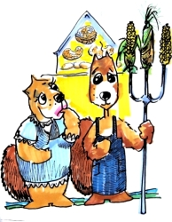

This page has usage examples for the following words:

antioxidants アンタイオキシダンツ
antioxidants 酸化防止剤 さんかぼうしざい
a meal 食事 しょくじ
a diet 食餌 しょくじ
cell 細胞 さいぼう
cancer prevention 癌の予防 がんのよぼう
carbohydrate 炭水化物 たんすいかぶつ
eating habit 食習慣 しょくしゅうかん
fat 脂肪 しぼう
nutritional balance 栄養のバランス えいようのバランス
oxidation, oxidization 酸化 さんか
oxidate, oxidize 酸化する さんかする
protein 蛋白質 たんぱくしつ
dietary therapy 食事療法 しょくじりょうほう
「食餌療法」を「食事療法」と書き換えられることがあります。
Many members in my family died of cancer.
私の家系には癌で亡くなった人が多いんです。
わたしのかけいには がんでなくなったひとがおおいんです。
Since I was a child, my diet has consisted of more meat than vegetables.
小さい頃からどちらかというと、野菜よりも肉中心の食生活です。
ちいさいころからどちらかというと、やさいよりもにくちゅうしんのしょくせいかつです。
My wife is a vegetarian, so after we got married I have had a tendency to eat as little meat as possible. I have noticed that my skin and hair have become lusterless.
結婚後、妻が菜食主義なので、私も肉をひかえめにしたところ、皮膚や髪の毛につやがなくなってきました。
けっこんご、つまが さいしょくしゅぎなので わたしも にくをひかえめにしたところ、ひふやかみのけに つやがなくなってきました。

My physical condition is getting weak.
体力も落ちてきたような気がします。
たいりょくもおちてきたようなきがします。
Is my diet well- balanced?
食事のバランスが悪いんでしょうか。
しょくじのバランスがわるいんでしょうか。
My wife is pretty healthy.
妻はいたって健康です。
つまは いたってけんこうです。
A conversation between a patient and a doctor about antioxidants
Patient:
Recently, I often heard the words “antioxidants” or “free radicals.” They are said to be related to cancer prevention. Can you explain these words in plain expressions?
最近、antioxidants（アンタイオキシダンツ）、free radicals (フリーラジカル）という言葉をよく耳にします。癌の予防と関係あるといわれています。やさしい表現を使って説明してくださいますか。
Doctor:
The body obtains necessary energy by oxidizing carbohydrate, fat and protein. In the process, free radicals are produced. Free radicals are unstable substance and when they invade cells, they change the character of cells, leading to cancer development. Antioxidants fight against free radicals. Many fruits and vegetables contain high amount of antioxidants. Vitamin A, C and E and b-carotene are antioxidants. As molecular biology continues to advance, more things will be elucidated.
身体は、必要とするエネルギーを、炭水化物、脂肪、蛋白質を酸化することによって得ています。酸化の過程でフリーラジカルが形成されます。このフリーラジカルは不安定な物質で、身体の細胞に侵入して細胞の性格を変えてしまい、つまるところ癌の発生につながります。アンタイオキシダンツは、このフリーラジカルをおさえ込み対抗します。多くの果物や野菜類はアンタイオキシダンツを多く含みます。ビタミンA、C、E、ベータカロチンは、アンタイオキシダンツです。分子生物学の発達で、これからも多くの事がわかってくると期待されます。
My two cents 一言おせっかい
Eat a well-balanced meal with lots of fresh fruits and vegetables.
結局、新鮮な物をバランスよく食べることが大切だということには変わりありません。
[a03]
| © 1995-2013 NACOS International Institute. All Rights Reserved. |